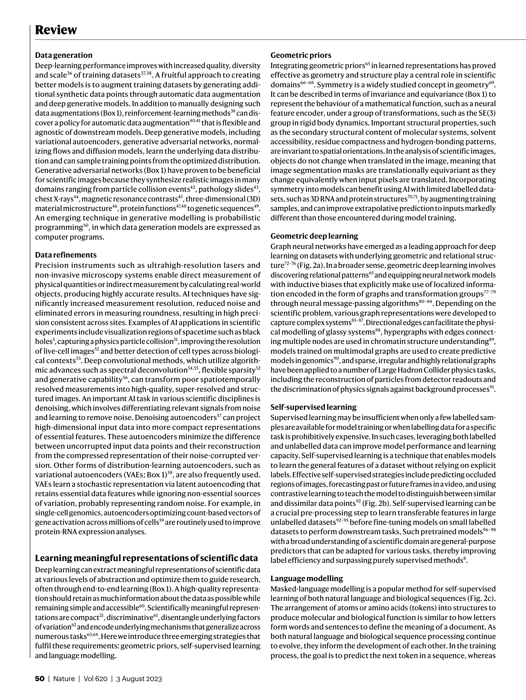

Figure 1
저자: Hanchen Wang, Tianfan Fu, Yuanqi Du, Wenhao Gao, Kexin Huang, Ziming Liu, Payal Chandak, Shengchao Liu, Peter Van Katwyk, Andreea Deac, Anima Anandkumar, Karianne Bergen, Carla P. Gomes, Shirley Ho, Pushmeet Kohli, Joan Lasenby, Jure Leskovec, Tie-Yan Liu, Arjun Manrai, Debora Marks 외 | 날짜: 2023 | Journal: Nature | DOI: 10.1038/s41586-023-06221-2
Figure 1
AI는 과학적 발견의 전 과정(데이터 수집, 표현 학습, 가설 생성, 실험 설계, 시뮬레이션)을 증강하고 가속화하고 있다. 자기지도학습(self-supervised learning), 기하학적 딥러닝(geometric deep learning), 생성 모델(generative models)이 핵심 기술적 돌파구이며, AlphaFold2의 단백질 접힘 문제 해결과 수백만 입자 분자 시뮬레이션이 대표적 성과이다. 그러나 데이터 품질, 분포 외 일반화(out-of-distribution generalization), 해석 가능성, 인과 추론의 한계가 AI4Science의 근본적 도전으로 남아 있다.

Figure 2

Figure 3

Figure 4
총평: AI4Science 분야의 현황과 전망을 과학적 발견의 전 과정에 걸쳐 포괄적으로 정리한 권위 있는 리뷰로, 분야의 지형도를 파악하는 데 탁월하나, 리뷰 특성상 개별 기술에 대한 깊이와 비판적 분석은 제한적이다.